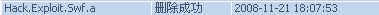

天羽：46期日本名人战赏析-第一局疏星【1】
#1 天羽：46期日本名人战赏析-第一局疏星【1】 作者：有志青年 发表时间：2008-11-19 23:23:24
#2 Re:天羽：46期日本名人战赏析-1 作者：就是叫嚣 发表时间：2008-11-20 0:06:05
沙发支持天羽教学~！好好学，天天看！#3 Re:天羽：46期日本名人战赏析-1 作者：gerbo 发表时间：2008-11-20 1:38:59
 强烈支持天羽老师
强烈支持天羽老师
#4 Re:天羽：46期日本名人战赏析-第一局疏星【1】 作者：耳痛 发表时间：2008-11-20 10:07:43
讲名人战赏析 分析的不必要那么细吧 想听听揣摸大师当时选点的心理是什么样的，为什么就那样走点。
名人战嘛 自然宣传名人的棋路风格，以人为本。
［ 有志青年 于 2008-11-20 11:22:29 时奖励此帖[金币加 20 威望加1］
#5 Re:天羽：46期日本名人战赏析-第一局疏星【1】 作者：行云流水 发表时间：2008-11-20 11:24:09
指出2点。第一，冈部已经工作，不是在校学生了。第二，白6走C，既然能通回最强防御，怎么能说是弱防呢？白6的变化是2006年中村茂九段在日本地区赛上下出的，很漂亮地战胜了河村九段。#6 Re:天羽：46期日本名人战赏析-第一局疏星【1】 作者：行云流水 发表时间：2008-11-20 11:25:29
实战白18的大体胜法在中华连珠网拙文中已经说明，大体就是以禁手的思路来取得必胜。#7 Re:天羽：46期日本名人战赏析-第一局疏星【1】 作者：快乐天羽 发表时间：2008-11-20 12:26:01
谢谢大家的意见#8 Re:天羽：46期日本名人战赏析-第一局疏星【1】 作者：飞熊 发表时间：2008-11-20 13:52:05
行云流水给个你的文章的链接啊#9 Re:天羽：46期日本名人战赏析-第一局疏星【1】 作者：有志青年 发表时间：2008-11-21 14:59:05
也可参见本站：与胜利擦肩而过——第46期日本名人赛首局讲评#10 Re:Re:天羽：46期日本名人战赏析-第一局疏星【1】 作者：nara 发表时间：2008-11-21 18:17:08
引用：
原文由 行云流水 发表于 2008-11-21 13:12:05 :
http://www.xxxxxx/7/2008/1029/article_56.html
刚才点了这个链接,瑞星监控好象显示中毒了.如图

请有志大哥检查下.
#11 Re:Re:Re:天羽：46期日本名人战赏析-第一局疏星【1】 作者：有志青年 发表时间：2008-11-21 20:56:20
引用：确实被人挂了木马！
原文由 nara 发表于 2008-11-21 18:17:08 :引用：
原文由 行云流水 发表于 2008-11-21 13:12:05 :
http://www.xxxxxxx/7/2008/1029/article_56.html刚才点了这个链接,瑞星监控好象显示中毒了.如图
请有志大哥检查下.
#12 Re:天羽：46期日本名人战赏析-第一局疏星【1】 作者：快乐天羽 发表时间：2008-11-21 21:12:59
哇，那不是很糟糕，我的瑞星怎么没提醒我那。我也去看了看你说的棋评。要如何才能搞定那，我不想我电脑还被人进来#13 Re:Re:天羽：46期日本名人战赏析-第一局疏星【1】 作者：有志青年 发表时间：2008-11-21 21:22:40
http://blog.sina.com.cn/s/blog_49674df60100abru.html引用：
原文由 快乐天羽 发表于 2008-11-21 21:12:59 :
哇，那不是很糟糕，我的瑞星怎么没提醒我那。我也去看了看你说的棋评。要如何才能搞定那，我不想我电脑还被人进来
看一下这个文章，对你有帮助，就我理解，可能问题不大
#14 Re:天羽：46期日本名人战赏析-第一局疏星【1】 作者：快乐天羽 发表时间：2008-11-25 15:43:40
更正：我刚看了一遍这个录象，里边第8手那个通字，编辑错点了，那个通字应该是1右下的点，那样才通一打的一个弱8变化。#15 Re:天羽：46期日本名人战赏析-第一局疏星【1】 作者：五星若连珠 发表时间：2008-12-27 21:52:22
变化演示的时候能不稍慢一点，要不然来不及看。。#16 Re:天羽：46期日本名人战赏析-第一局疏星【1】 作者：飞哥 发表时间：2009-2-16 19:47:02
东北哥妹儿啊
#17 Re:天羽：46期日本名人战赏析-第一局疏星【1】 作者：五子棋学徒 发表时间：2009-3-9 20:17:09
怎么都是放了不到一分钟就停了啊
#18 Re:天羽：46期日本名人战赏析-第一局疏星【1】 作者：空陈 发表时间：2010-3-13 13:22:20
后半截不能播放了